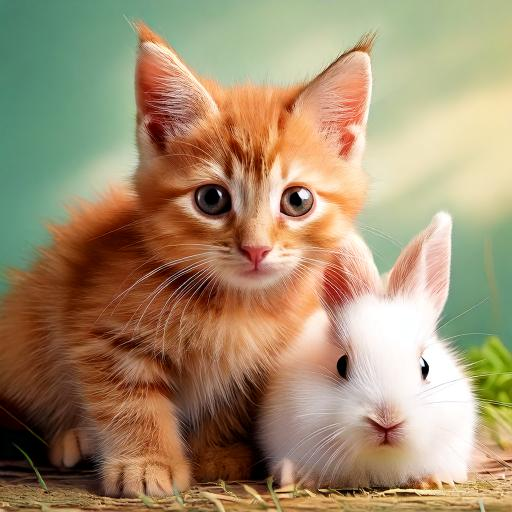

Whiskers Meets New Friends
Whiskers, curious, trotted through the garden one sunny afternoon, her tail flicking with excitement. As she explored a patch of daisies, she stumbled upon a shy rabbit named Thumper, nibbling on some clover. Whiskers, eager to make a new friend, approached gently and gave a friendly meow. To her delight, Thumper hopped closer, and they exchanged greetings.
